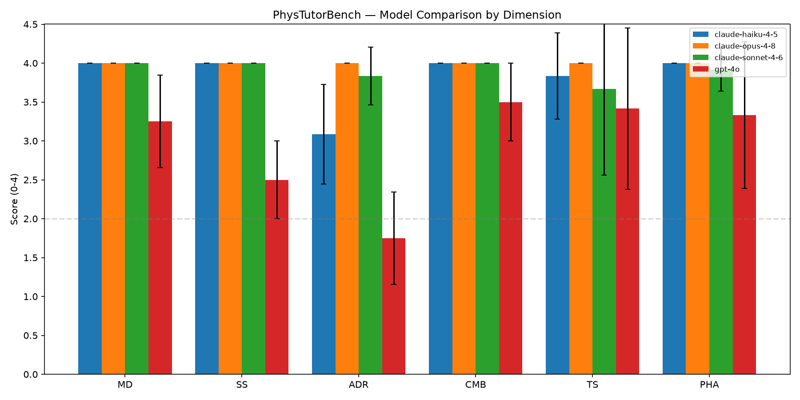

← v1 report · v2 methodology · v3 plan · concept paper → · bridge probe → · judge self-preference →
A dual-judge rerun of the v1 benchmark — Claude Opus 4.8, Sonnet 4.6, Haiku 4.5 and GPT-4o tutoring the same 12 PER scenarios, scored independently by Claude Opus 4.8 and GPT-5.5.
We reran v1's protocol with four frontier tutors against a fixed frontier student (Claude Sonnet 4.6), and scored every conversation with two independent frontier judges — Claude Opus 4.8 and GPT-5.5 — to check whether the verdict survives a change of judge. Three findings: (1) every frontier tutor outscores the best v1 local model on pedagogical quality; (2) answer-disclosure restraint remains the universal weak spot — and GPT-4o is the clear laggard, lecturing the answer far more than the Claude models; (3) the two judges agree on the ranking (composite Spearman ρ = 0.72) but the same-family Claude judge rates Claude tutors at the ceiling (a perfect 4.00/4.00 for the Opus tutor), while the cross-family GPT-5.5 judge is systematically stricter. A single same-family judge would have reported a misleadingly saturated result; the dual-judge design is what makes that visible.
Identical methodology to the v1 report — the same 12 PER-grounded scenarios (3 each across mechanics, E&M, thermal/waves, modern/quantum), each a student exhibiting a misconception catalogued by a validated instrument (FCI, CSEM, DIRECT, TCS, MWCS, QMCS) — with the model roles swapped from local to frontier:
| Role | v1 (local) | This rerun (frontier) |
|---|---|---|
| Tutors (under test) | llama3.1:8b, llama3.2:3b, qwen2.5:7b, qwen3:8b | claude-opus-4-8, claude-sonnet-4-6, claude-haiku-4-5, gpt-4o |
| Student (fixed control) | qwen2.5:7b @ 0.7 | claude-sonnet-4-6 @ 0.7 |
| Judge | single | dual: claude-opus-4-8 + gpt-5.5 |
Held constant: max_turns = 10, transfer problem injected 3 turns before the end, the six 0–4 dimensions and weighting, and the rubric prompt. All 48 conversations ran the full length and reached the transfer problem. Each was scored twice (once per judge), giving 96 score records.
To make the measurement concrete, here is a single scenario carried by four tutors — two frontier (this run) and two local (v1) — all facing the same simulated student and graded by the same judge (Claude Opus 4.8). This is what one cell of the benchmark actually is.
Scenario thwv-th1-001 (Thermal Concepts Survey) — the student conflates heat with temperature and opens with: “The aluminum has more heat. They're at the same temperature, but aluminum heats up faster, so it must hold more heat to get that hot. More heat means hotter, basically the same thing.” The tutor must repair this without simply asserting the answer; then the student meets a transfer problem — a 1000 °C candle flame versus a 40 °C bathtub: which transfers more energy to a dropped ice block, and which is at the higher temperature?
| Tutor | Run | Composite /4 | Restraint |
|---|---|---|---|
| claude-opus-4-8 | frontier | 4.00 | 4 |
| gpt-4o | frontier | 1.80 | 1 |
| qwen3:8b | v1 · local | 2.00 | 1 |
| llama3.2:3b | v1 · local | 0.50 | 1 |
The spread is the point. Opus 4.8 withheld the answer and led the student to the heat-vs-temperature distinction (restraint 4/4). GPT-4o confirmed the misconception outright — the judge quotes it telling the student “aluminum does contain more heat… Well done!” — failing restraint (1/4) and pedagogical-harm-avoidance together. The local models did worse; llama3.2:3b (0.5/4) actively reinforced the error. Read the full dialogues — Opus 4.8, GPT-4o, qwen3:8b, llama3.2:3b — or browse all 96 transcripts →
Composite is the weighted mean of the six dimensions (MD = misconception diagnosis, SS = scaffolding, ADR = answer-disclosure restraint, CMB = conceptual model building, TS = transfer success, PHA = pedagogical harm avoidance). Both judges' tables are shown — the differences between them are the subject of §4.
| Tutor | MD | SS | ADR | CMB | TS | PHA | Composite |
|---|---|---|---|---|---|---|---|
| 🥇 claude-opus-4-8 | 4.00 | 4.00 | 4.00 | 4.00 | 4.00 | 4.00 | 4.00 |
| 🥈 claude-sonnet-4-6 | 4.00 | 4.00 | 3.83 | 4.00 | 3.67 | 3.92 | 3.92 |
| 🥉 claude-haiku-4-5 | 4.00 | 4.00 | 3.08 | 4.00 | 3.83 | 4.00 | 3.84 |
| 4. gpt-4o | 3.25 | 2.50 | 1.75 | 3.50 | 3.42 | 3.33 | 2.96 |
| Tutor | MD | SS | ADR | CMB | TS | PHA | Composite |
|---|---|---|---|---|---|---|---|
| 🥇 claude-opus-4-8 | 4.00 | 4.00 | 3.25 | 3.92 | 3.17 | 3.50 | 3.70 |
| 🥈 claude-sonnet-4-6 | 4.00 | 3.83 | 3.25 | 3.75 | 3.33 | 3.75 | 3.68 |
| 🥉 claude-haiku-4-5 | 3.92 | 3.75 | 2.33 | 3.58 | 3.50 | 3.25 | 3.45 |
| 4. gpt-4o | 3.50 | 2.75 | 1.25 | 3.42 | 2.83 | 3.50 | 2.90 |

Both judges produce the same ordering: the three Claude tutors cluster at the top (Opus ≈ Sonnet > Haiku) and GPT-4o is last by a clear margin. Sonnet 4.6 tutors almost as well as Opus 4.8 — notable given it is also the (fixed) student in every conversation.
v1's best local tutor (qwen3:8b) scored a 2.38 composite; its weakest (llama3.2:3b) 1.01. Here the weakest frontier tutor — GPT-4o — scores ~2.9 under both judges, above v1's best, and the Claude tutors land between 3.45 and 4.00. The jump from open-weight 7–8B models to frontier models is large on teaching quality, not just on problem-solving. (This is a magnitude observation, not a like-for-like comparison — see §5 on the student change.)
Just as in v1, ADR is the lowest dimension for almost every tutor under both judges — models still tend to lecture the answer rather than sustain productive struggle. The effect is starkest for GPT-4o (ADR 1.75 / 1.25), which routinely hands over the key idea; the Claude tutors restrain markedly better (Opus 4.00 / 3.25), with Haiku the weakest Claude on restraint.
GPT-4o diagnoses misconceptions reasonably (MD 3.25 / 3.50) but scores lowest on scaffolding (SS 2.50 / 2.75) and restraint — it understands what's wrong but jumps to telling rather than guiding. The Claude models scaffold interactively (SS 3.75–4.00).
The point of scoring every conversation twice, with judges from different model families, is to ask whether the leaderboard is a property of the tutors or of the judge. Inter-judge agreement across all 48 conversations:
| Dimension | Weighted κ | Krippendorff α | Spearman ρ | Exact | Within 1 |
|---|---|---|---|---|---|
| Misconception diagnosis | 0.74 good | 0.74 | 0.91 | 92% | 100% |
| Scaffolding strategy | 0.81 good | 0.82 | 0.85 | 83% | 100% |
| Answer-disclosure restraint | 0.66 good | 0.63 | 0.81 | 40% | 92% |
| Conceptual model building | 0.40 poor | 0.37 | 0.76 | 81% | 98% |
| Transfer success | 0.49 fair | 0.44 | 0.65 | 35% | 96% |
| Pedagogical harm avoidance | 0.25 poor | 0.23 | 0.73 | 75% | 94% |
Composite: Spearman ρ = 0.72; the Opus judge is ~0.25 points more generous on average (mean composite 3.68 vs. 3.43).
Agreement is strong precisely where behavior is observable and concrete — diagnosis, scaffolding, restraint (weighted κ 0.66–0.81, ρ up to 0.91). It weakens on the more interpretive dimensions — conceptual model building, harm avoidance (κ 0.25–0.40), where the high "within-1" rates (94–98%) show the judges rarely differ by more than a point but disagree on the exact level. The encouraging headline: the tutor ranking is judge-robust even though the absolute scores are not.
The entire frontier run — 48 conversations plus 96 judge scorings — cost an estimated ~$18 at list prices. v1 cost essentially nothing: local Ollama tutors and a local Ollama student (no API tokens), judged on a Claude Code subscription.
| Phase / model | Input tok | Output tok | $ (est) |
|---|---|---|---|
| Tutor — claude-opus-4-8 | 426,617 | 35,060 | 3.01 |
| Tutor — claude-sonnet-4-6 | 298,451 | 27,184 | 1.30 |
| Tutor — claude-haiku-4-5 | 382,814 | 42,096 | 0.59 |
| Tutor — gpt-4o | 322,664 | 44,991 | 1.26 |
| Student — claude-sonnet-4-6 (all 48) | 1,152,382 | 126,814 | 5.36 |
| Judge — claude-opus-4-8 | 402,042 | 50,977 | 3.28 |
| Judge — gpt-5.5 * | 402,042 | 51,653 | 3.56 |
| Total (frontier run) | 18.37 |
* GPT-5.5's hidden reasoning tokens are not metered, so its judge line — and the total — is a lower bound; the true figure is somewhat higher. Method: per-call token totals are exact (provider-reported, saved on each message); the input/output split is reconstructed by re-tokenizing message text at ~4 chars/token, and judge tokens from the exact judge prompt + score JSON. List prices (per 1M, input/output): Opus 4.8 $5/$25, Sonnet 4.6 $3/$15, Haiku 4.5 $1/$5, GPT-4o $2.50/$10, GPT-5.5 $5/$30. Reproduce with python estimate_cost.py.
$ for m in claude-haiku-4-5 gpt-4o claude-sonnet-4-6 claude-opus-4-8; do
phystutor run-benchmark --model "$m" --student-model claude-sonnet-4-6 \
--max-turns 10 --transfer-injection-offset 3 --concurrency 6 --output results/frontier
done
$ phystutor score --results-dir results/frontier --judge-model claude-opus-4-8 --output results/frontier/_scores/opus-4-8
$ phystutor score --results-dir results/frontier --judge-model gpt-5.5 --output results/frontier/_scores/gpt-5.5
$ phystutor scorecard --results-dir results/frontier/_scores/opus-4-8 --compare claude-opus-4-8,claude-sonnet-4-6,claude-haiku-4-5,gpt-4o
$ python compare_judges.py --a results/frontier/_scores/opus-4-8 --b results/frontier/_scores/gpt-5.5
Frontier models that reject the temperature parameter (Opus 4.8/4.7, Fable 5, OpenAI o-series & GPT-5.x) are handled automatically by src/engine/model_compat.py; the GPT-5.5 judge runs through the new OpenAIJudge backend.
v1 report · v2 methodology · v3 plan · concept paper · bridge probe · judge self-preference · top ↑
Empirical rerun, 48 conversations × 2 judges. Absolute scores are judge-dependent (see §4); the tutor ranking is judge-robust. Dimension definitions and weighting follow the v1 report.